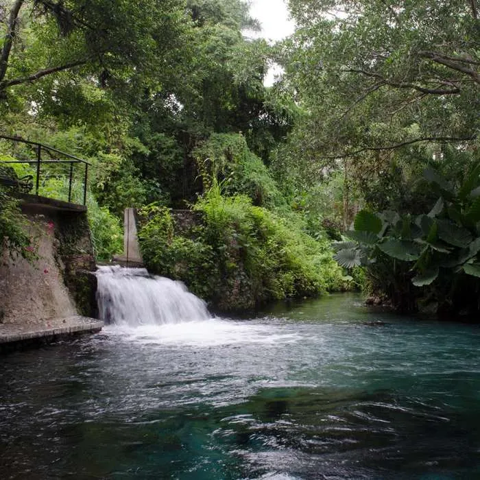
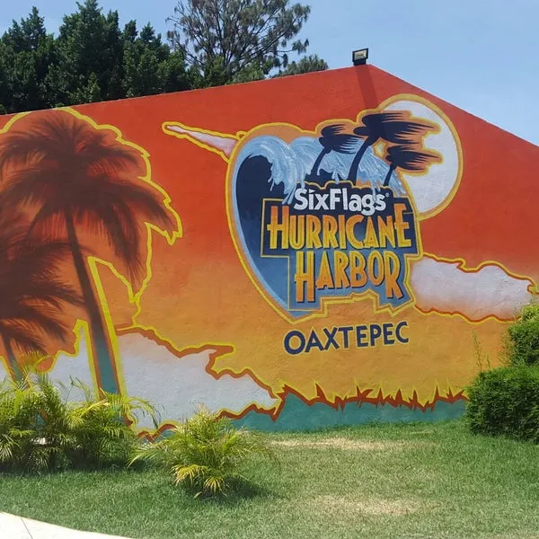
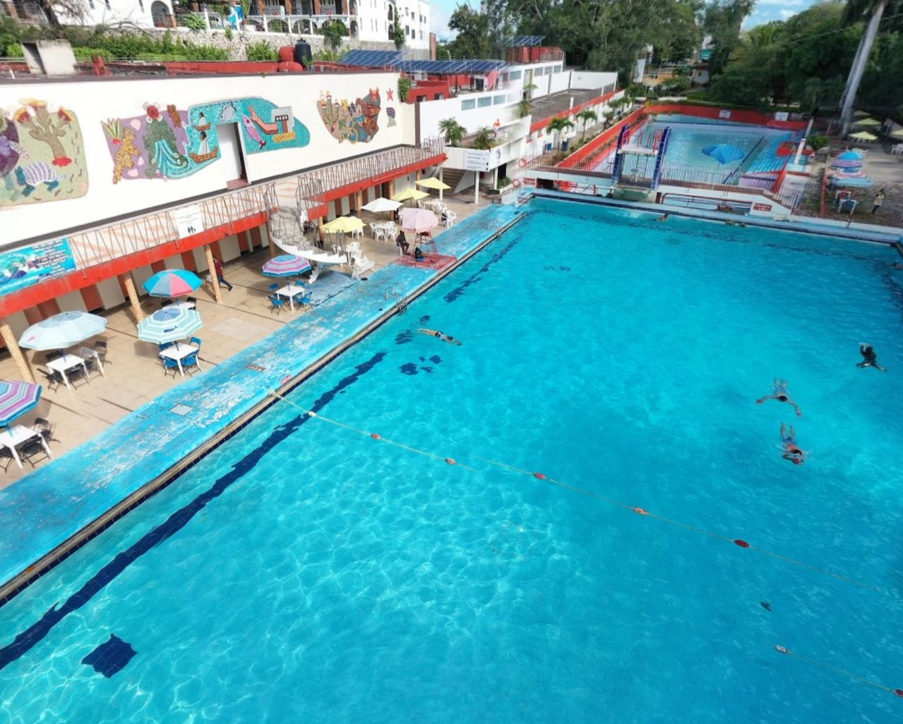
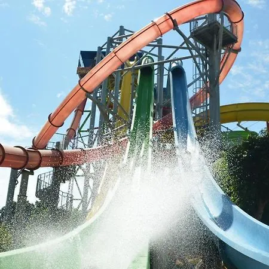
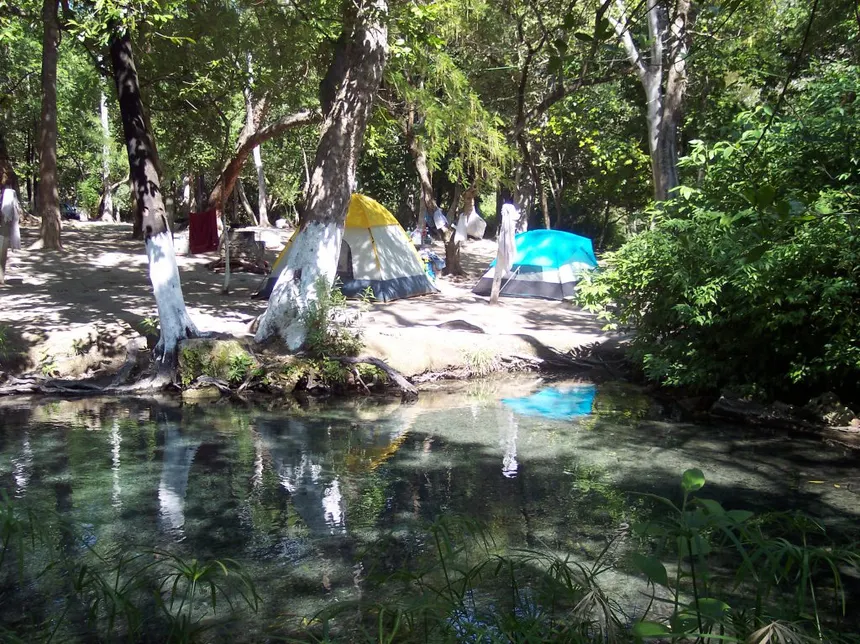
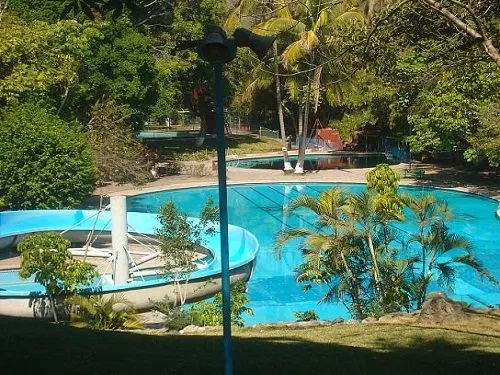

Balnearios y Parques Acuáticos Naturales en Morelos
Morelos cuenta con una gran variedad de balnearios y parques acuáticos que ofrecen diversión, descanso y contacto con la naturaleza. Desde ríos cristalinos hasta parques con toboganes extremos, estos destinos son ideales para escapar del calor y disfrutar en familia o con amigos.
Las Estacas (Tlaltizapán)
Un paraíso natural con el nacimiento del río Yautepec. Ideal para snorkel, buceo, kayak y camping. Rodeado de vegetación, es perfecto para los amantes del ecoturismo.
Six Flags Hurricane Harbor (Oaxtepec)
El parque acuático más moderno del estado, con toboganes extremos, alberca de olas, zonas infantiles y atracciones tipo parque temático.
Agua Hedionda (Cuautla)
Conocido por sus aguas sulfurosas con propiedades terapéuticas. Tiene albercas, áreas de picnic y una historia que se remonta a tiempos prehispánicos.
El Rollo (Tlaquiltenango)
Uno de los parques acuáticos más grandes de México. Cuenta con toboganes gigantes, río lento, albercas con olas y áreas de descanso.
Los Manantiales (Tlaquiltenango)
Balneario natural rodeado de árboles y naturaleza. Sus aguas frescas provienen directamente de manantiales. Ambiente familiar y tranquilo.
Campamento ISSSTEHuixtla (Jojutla)
Ideal para descansar, nadar en aguas naturales y disfrutar de la tranquilidad. Tiene opción de hospedaje, asadores y actividades recreativas.
